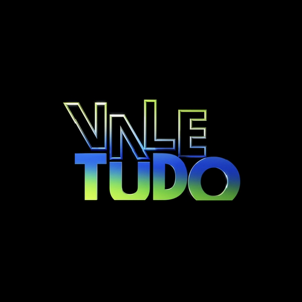
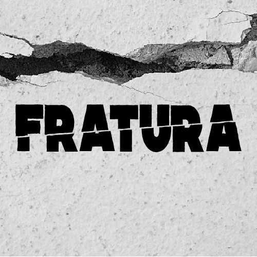

Vale Tudo (2025) - Novela
Elenco de apoio novela
É um reboot da telenovela de mesmo nome, criada e escrita por Gilberto Braga, Aguinaldo Silva e Leonor Bassères, que foi exibida originalmente entre 1988 e 1989. Adaptada por Manuela Dias.
Assista aqui!

Fratura - Curta Metragem
Atriz e produtora
A peça tem como objetivo gerar reflexão no espectador sobre o existencialismo humano. Sobre a experiência da passagem do tempo, o aqui/agora e a construção que fazemos pelo caminho.
Assista aqui!

Cara e Coragem - Novela
Elenco de apoio em novela
Aqui um texto de descrição para o produto no cartão. Percebemos, cada vez mais, que a determinação clara de objetivos obstaculiza a apreciação da importância do orçamento setorial.
Assista aqui!
Leader Magazine - Comercial
Atriz em campanha comercial
Aqui um texto de descrição para o produto no cartão. Percebemos, cada vez mais, que a determinação clara de objetivos obstaculiza a apreciação da importância do orçamento setorial.
Assista aqui!